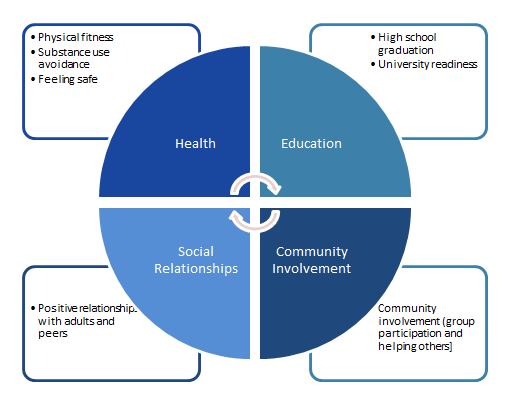

This page has detailed information about all Putting Youth on the Map indices, data sources,
and potential data and map shortcomings "limitations"). Soon you will be able to download the
data used in making these maps. Click on the map series of interest for this information.
Youth Well-Being Index (YWI)
The YWI offers a snapshot of overall youth well-being by looking across indicators of health, education,
positive social relationships, and community engagement. We also break down YWI analyses by sex and race/ethnicity.

We selected YWI indicators based on a review of research and other indices, as well as data availability for
geographic units smaller than counties. For more information about the YWI, click the sections below.
I. CAUTION: YWI Data Sources and their Limitations
The index uses three main data sources: the U.S. Census Bureau, the California Department of Education (CDE),
and the California Healthy Kids Survey (CHKS). Each provides presents limitations (potential weaknesses)
that are important to understand when using the YWI because they might bias location scores.
1. U.S. Census Bureau
The U.S. Census Bureau provides extensive data on youth and family conditions throughout the United States.
Here we use American Community Survey (ACS) 5-year estimates for 2007-2012. Data limitations include:
- potential under-representation of undocumented immigrant populations,
- increased potential for population estimate errors for low-density rural areas.
2. CDE
The CDE provides data on California students and schools. There are several challenges with the data used here.
- Teachers receive limited instruction on administering physical fitness tests,
which might lead to variability in the testing and results.
- The practice of sending some students to alternative schools run by county offices of education,
enrollment in charter, private and virtual schools (some of which enroll out-of-area students),
and home schooling affect the accuracy of dropout rates for district geographic areas; these schools’
data, along with that of incarcerated students are not reflected in district-level data. School district
boundary changes complicate accurate data mapping.
3. CHKS
The
CHKS was administered by CDE and WestEd to 5th, 7th,
9th and 11th grade students in most California school districts until 2011 (see [website] for more info on
administration)—here we use 9th and 11th grade data. CHKS offers rich information about students' experiences,
and it is the only large-scale California youth survey that aims to represent well (or “be representative” for)
geographic areas smaller than the county. Important dataset limitations to keep in mind are:
- The survey typically is not administered at charter schools, alternative or community day
schools, home school programs, private schools, and schools serving incarcerated youth.
This could bias well-being scores. Data are missing altogether for some districts, in other
cases for a grade level, and in all cases for youth not attending school;
- School district boundary changes complicate accurate data mapping;
- Districts do not always meet the sampling and participation guidelines set by the
survey developers to produce sound (valid and representative) data. To have valid
and representative data, West Ed and CDE set these criteria.
- 100% of all district schools participated; or 100% of all selected schools participated in an approved sampling plan;
- An appropriate class subject or class period was identified and used;
- 100% of selected classrooms participated;
- The number of usable answer forms received was 60% or more of the selected sample [at least 70% is considered optimal].
We are unable to assess whether districts met criteria 1-3. We do provide and use CHKS survey participation information.
For each map with CHKS data, an asterisk marks districts where CHKS participation rates were less than 60%. We provide
District CHKS Participation Rates in district pop-up boxes. More information on student participation is available
in individual district secondary level reports, available at
http://dq.cde.ca.gov/dataquest/
[Use “district” as the “level,” and “California Healthy Kids Survey” as the “subject.” Within the report see “Sample Characteristic” tables.]
CHKS participation rates affect YWI map and data availability in two important ways:
- We do not calculate the YWI Score for districts where CHKS participation rates were less than 40% and/or
fewer than 15 participants answered the survey questions we used. However, underlying indicator data are
provided for these districts.
- The YWI and underlying CHKS indicator data are provided by racial/ethnic group only where the district
participation rate is at least 40% and at least 15 participants of specific racial/ethnic backgrounds
have answered the survey questions used.
II. YWI Data
The YWI assesses adolescent outcomes across four domains: health, education, social relationships, and community context.
Each domain is comprised of one to three indicators, and each indicator includes one or more measures, as described below.
Domains, indicators and measures were selected based on review of research on youth well-being and review of other
indices of youth well-being (Erbstein, Hartzog and Geraghty, forthcoming).
-
Health Domain: The Health Domain represents a composite score based on the following indicators: Physical Fitness,
Substance Use Avoidance and Feeling Safe.
(Download Health Domain Data)
-
Physical Fitness Indicator: The extent, to which youth are meeting minimum levels of fitness associated
with protection against diseases linked to physical inactivity, operationalized using 1 measure from
CDE 2010-2011 data
(Download Physical Fitness Indicator Data).
- % 9th graders deemed fit on 6 of 6 physical fitness tests (CDE)
This measure is the percentage of youth who were in the "Healthy Fitness Zone" for all six of the following
tests: aerobic capacity, abdominal strength and endurance, upper body strength and endurance, body composition,
trunk strength, and back and shoulder flexibility.
-
Substance Use Avoidance Indicator: The extent, to which youth are mostly abstaining from substance use,
operationalized using 3 measures from CHKS 2008-2010.
(Download Substance Use Avoidance Indicator Data)
- % 9th and 11th graders who smoked 0-1 cigarettes in their lifetime (CHKS)
- % 9th and 11th graders who had 0-1 full drinks of alcohol in their lifetime (CHKS)
- % 9th and 11th graders who used marijuana 0-1 times in their lifetime (CHKS)
-
Feeling Safe Indicator: The extent, to which youth are experiencing school safety and freedom from harassment
at school based on real or perceived aspects of personal/group identity, operationalized using 7 measures
from CHKS 2008-2010.
(Download Feeling Safe Indicator Data)
- Feeling Safe at School Measure: This map shows the response to the question, "How safe do you feel at school?"
The original data were derived from the 2008-2010 California Healthy Kids Survey (CHKS) administered in grades 9 and 11.
Due to confidentiality agreements, we are showing only the range in which each school district falls.
- % 9th and 11th graders not bullied at school past 12 months due to race/ethnicity/national origin (CHKS)
- % not bullied at school past 12 months due to religion (CHKS)
- % not bullied at school past 12 months due to gender (CHKS)
- % not bullied at school past 12 months due to sexual orientation (CHKS)
- % not bullied at school past 12 months due to physical or mental disability (CHKS)
- % not bullied at school past 12 months for other reasons (CHKS)
-
Education Domain: The Education Domain represents a composite score based on the following indicators: High School
Graduation Rate and University Readiness.
(Download Education Domain Data)
- High School Graduation Rate Indicator: The extent to which youth are completing basic academic training.
(Download High School Graduation Rate Indicator Data)
- Proportion graduating from high school (as 1 minus 4-year dropout rate)
(CDE 2009-2010)
- University Ready Indicator: The extent to which youth are prepared to pursue a 4-year college education
upon graduating from high school if they choose to do so.
(Download University Ready Indicator Data)
- Proportion high school graduates passing state university prerequisites
(CDE 2009-2010)
-
Social Relationships Domain: The Social Relationships Domain represents a composite score based on the following
indicator: Positive Relationships.
(Download Social Relationships Domain Data)
-
Positive Relationships Indicator: The extent to which youth are engaged in positive relationships across
multiple contexts, operationalized through 6 measures from CHKS 2008-2010, grades 9 and 11.
(Download Positive Relationships Indicator Data)
- There is an adult outside school or home whom I trust (not true to very true) (CHKS)
- There is a teacher/other adult at my school who really cares about me (not true to very true) (CHKS)
- Outside home and school, there is an adult who really cares about me (not true to very true) (CHKS)
- I feel close to people at this school (strongly disagree to strongly agree) (CHKS)
- I am happy to be at this school (strongly disagree to strongly agree) (CHKS)
- I feel like I am part of this school (strongly disagree to strongly agree) (CHKS)
-
Community Context Domain: The Community Context Domain represents a composite score based on the following
indicators: Material Resources and Community Involvement.
(Download Community Context Domain Data)
-
Material Resources Indicator: The extent to which youth are growing up in households with adequate
financial resources, operationalized through 1 measure from the US Census Bureau. To construct a
threshold of "adequate" household resources, we draw on cost of living estimates associated with
a "living wage" for families with children in California, generated by the "Living Wage Calculator"
(Downloaded from
http://www.livingwage.geog.psu.edu/states/06
on March 23, 2011. Estimates are
based on the latest data available as of November 2008.); across various family configurations
these estimates are approximately three times the federal poverty level.
(Download Material Resources Indicator Data)
- % 12-17 year olds in households with income at least 300% federal poverty line
(ACS 2006-2010 5 year estimates, Table B17024)
-
Community Involvement Indicator: The extent to which youth are involved in their communities
outside school classes, operationalized through 3 measures from CHKS 2008-2010.
(Download Community Involvement Data)
- Belong to clubs, teams, church or other group activities (not true to very true) (CHKS)
- Involved in music, art, literature, sports, hobbies (not true to very true) (CHKS)
- Help other people (not true to very true) (CHKS)
III. YWI Construction
For each of the four domains—health, education, social relationships, and community context—we construct analyses of the
proportion of youth that fall into the most positive category across indicators. The index presents a composite score
based on all four domains.
Original data elements came in multiple forms (e.g. Likert scales of varying size, percentages). Each item was converted
to a percentage of the best possible score. Once the measures were standardized, results from correlational and principal
components analyses were used to construct indicators. We then use a stepwise approach in which indicators are equally
weighted in each domain score, and then the domains are equally weighted in the overall index score.
Like any index, the YWI presents multiple limitations that should be considered in interpreting results.
Indicators
The index lacks key indicators of well-being because data were unavailable, or unavailable at an appropriate scale.
For example, it does not include robust measures of relationships with parents, peers, or partners, which numerous
studies find are pivotal factors in youth well-being. Nor does it include information about positive gender, ethnic
and sexual identity development. Indicator data for the education domain focuses heavily on school and not at all
on development of other critical life skills and knowledge (e.g. knowing how to navigate systems, manage personal
finances, etc.). The analysis is also constrained by the lack of data on positive indicators of youth well-being
(as opposed to measures of negative behaviors and outcomes).
Weighting
Indices are sensitive to the items included, how they are grouped, and how they are weighted in calculations of
summary scores. The 'stepwise equal weighting' method used here ultimately does create unequal weights for
indicators within domains due to differing numbers of indicators within a domain. Our primary goals were to
equally weight domains, consistent with prior research, and to ensure that indicators provided the most complete
possible picture of well-being for each domain. Use of principal components analysis helped avoid significant
redundancy in the grouping of indicators and measurement of effects.
Compensatability
As with any index created by summing multiple items into a composite measure, the YWI is subject to the problem
of compensatability. A high score in one domain may offset a low score in another domain, leading to a moderate
overall score for a school district. Another school district may achieve the same overall score through the
combination of moderate sub-domain scores. These two districts, though qualitatively different, would appear
similar on the map given their index scores. Similarly, two districts could achieve the same domain score through
different combinations of values on the component indicators. The compensability problem therefore limits the
ability of the index to convey how youth are faring. To offset this, we provide information about the distribution
of domain scores, and when possible, indicator scores.
Significance
We are unable to test statistical significance between well-being scores by school districts. Since data were
collected at the school district level (one observation per variable per school district) at a single point in time,
we are unable to assess the stability of our estimates or the error in each observation.
Validity
Assessing the validity of a multidimensional index is difficult because it is unclear what criteria to use. However,
a set of Capital Region-focused qualitative studies of youth well-being (n(youth)=16, n(adult allies)=59) offered one
external basis for assessment of a pilot version of the index, and patterns captured in that version did reflect
local and regional qualitative descriptions. Going forward, it will be important to compare this index to others,
assess its ability to predict various concurrent and future outcomes, and assess its utility as a tool for
policy-makers, youth-focused practitioners and youth advocates.
All index construction limitations should be considered when using this index. Despite these limitations, the
index captures many key aspects of youth well-being, including factors known to predict successful and healthy
transitions to adulthood and factors that youth consider important. An index based on all of these indicators
provides a snapshot of the state of California's youth.
IV. YWI Mapping
Index data were imported into GIS software (ArcMap v10.0, Esri, Redlands, CA) and joined to a geographic file
representing merged Unified School District boundaries and Secondary School District boundaries (original boundary
files downloaded from
http://www.census.gov/geo/www/tiger/tgrshp2010/tgrshp2010.html).
For each of the four domains
and the aggregate index, a map representing the distribution of the data was symbolized. In each map, data are
broken down into 10% intervals that range from a low of 20% to the maximum possible score, 100%.
The school district scale may still mask important intra-district geographic disparities. Please see the Tutorial
section of this website for information on interpretation of spatial data.
All index mapping limitations should be considered when using this index.
Index of Youth Vulnerability
The index of youth vulnerability combines four indicators that have been associated with youth marginalization
from many of the institutional settings that facilitate pathways to a healthy adulthood for most youth. They
include: teen parenting, not completing high school, foster care placement and low family income. Though we
originally intended to include involvement in the juvenile justice system (felony arrests) as a fifth indicator,
those data were unavailable to us. For each indicator used, we normalized the data and then categorized into
quintiles. Each quintile was then given a rank from 1 to 5 with 1 representing lowest levels of vulnerability
or need and 5 indicating the highest levels. Please see the metadata for each of the indicators for specific
information on data manipulation and analysis. To create the final index, we averaged the rank for each of
the four predictive indicators. Then the results were classified by quintiles such that the lowest quintile
would represent areas with the least vulnerability to disconnection while the highest quintile would be at
risk for disconnection.
(Click a section title below to view its contents.)
Teen Birth Rate
Teen mothers are more likely to not graduate from high school and/or pursue postsecondary education,
experience more rapid repeat pregnancy, face the challenges of single parenthood and grapple with
unemployment and poverty. This teen birth rate map represents the number of 13 to 19 year olds in each
census tract who gave birth in 2010 divided by number of females in the same age group. Teen birth data
were obtained (after receiving approval from the Committee for the Protection of Human Subjects) from
the California Department of Public Health's Health Information and Research Section, using the Birth
Statistical Master File for 2010. A total of 43,651 births were known to occur to mothers under the age
of 20. Births were geocoded to the mother's home address. Seventy-eight teen mothers did not have
addresses in the database (0.18%) and another 99 (0.23%) could not be geocoded due to improper address
information. The remaining addresses with a successful geocode were aggregated to the census tract
level and then divided by the female population age 13-19 (the at risk population) to achieve a teen
birth rate. Female population data came from the U.S. Census report QT-P2 (Single Years of Age and Sex)
from the 2010 Census Summary File 1.
(
Download Teen Birth Rate Data)
Foster Care Entry Rate
Youth who enter into the foster care system tend to be vulnerable to inadequate support that leads to
poor educational, mental and physical health, social developmental and economic outcomes. Our map shows
the rate of foster care entry per 1,000 youth age 0 to 17 in 2010. The raw foster care data were collected
from the Child Welfare Dynamic Reporting System which is a California Department of Social Services /
University of California at Berkeley collaboration. Their website is:
http://cssr.berkeley.edu/ucb_childwelfare/GeoData.aspx.
Of note, the foster care data for 2010 were collected based on year 2000 census tracts. In order to
crosswalk the 2000 census tract data to 2010 boundaries, we used code developed for STATA statistical
software (Stata/MP 12.0 for Windows, StataCorp LP, College Station, TX) by researchers at Brown University*.
The code can be accessed at:
http://www.s4.brown.edu/us2010/Researcher/LTBDDload/DataList.aspx.
The use agreement for this code included non-redistribution of the data. For that reason, we only allow
download of the foster care entry rate rank.
* US2010 Project - data source at
http://www.s4.brown.edu/us2010/Researcher/Bridging.htm.
Technical documentation: John R. Logan, Zengwang Xu, and Brian Stults. 2012. "Interpolating US Decennial
Census Tract Data from as Early as 1970 to 2010: A Longitudinal Tract Database"
Professional Geographer,
forthcoming.
(
Download Foster Care Entry Rate Data)
Poverty Rate
Lower family income is associated with decreased opportunities for transition to a healthy adulthood.
In this map we show the poverty rate as the percentage of 12 to 17 year olds living in families with
incomes that are less than 200% of the federal poverty level. Data were collected from the U.S. Census
Bureau's American Community Survey 5-year estimates for 2010, using table B17024 "Age by ratio of income
to poverty level in the past 12 months." Since the American Community Survey (ACS) is not a complete
census, a margin of error (MOE) for each data point is given with the raw data. In this indicator, we
combined several estimate to create the < 200% poverty level variable. An explanation of the margin of
error calculation for aggregated count data and derived proportions is shown below. Please beware of
census tracts with large MOEs because the data are likely much less accurate.
Variable list in the ACS report (see below). Note that the number ranges indicate the ratio of
income to poverty level in the past 12 months. Therefore, to obtain < 200% poverty level, one could
add all of the populations under 2_00…OR…add all of the populations 2_00 and above and subtract them
from the total. When working with the margins of error, it is generally considered best practice to use
the fewest number of variables or components possible to reduce error.
| VD28 | 'Total 12 to 17 years' |
| VD28MOE | 'Total 12 to 17 years MOE' |
| VD29 | 'Total 12 to 17 years Under _50' |
| VD29MOE | 'Total 12 to 17 years Under _50 MOE' |
| VD30 | 'Total 12 to 17 years _50 to _74' |
| VD30MOE | 'Total 12 to 17 years _50 to _74 MOE' |
| VD31 | 'Total 12 to 17 years _75 to _99' |
| VD31MOE | 'Total 12 to 17 years _75 to _99 MOE' |
| VD32 | 'Total 12 to 17 years 1_00 to 1_24' |
| VD32MOE | 'Total 12 to 17 years 1_00 to 1_24 MOE' |
| VD33 | 'Total 12 to 17 years 1_25 to 1_49' |
| VD33MOE | 'Total 12 to 17 years 1_25 to 1_49 MOE' |
| VD34 | 'Total 12 to 17 years 1_50 to 1_74' |
| VD34MOE | 'Total 12 to 17 years 1_50 to 1_74 MOE' |
| VD35 | 'Total 12 to 17 years 1_75 to 1_84' |
| VD35MOE | 'Total 12 to 17 years 1_75 to 1_84 MOE' |
| VD36 | 'Total 12 to 17 years 1_85 to 1_99' |
| VD36MOE | 'Total 12 to 17 years 1_85 to 1_99 MOE' |
| VD37 | 'Total 12 to 17 years 2_00 to 2_99' |
| VD37MOE | 'Total 12 to 17 years 2_00 to 2_99 MOE' |
| VD38 | 'Total 12 to 17 years 3_00 to 3_99' |
| VD38MOE | 'Total 12 to 17 years 3_00 to 3_99 MOE' |
| VD39 | 'Total 12 to 17 years 4_00 to 4_99' |
| VD39MOE | 'Total 12 to 17 years 4_00 to 4_99 MOE' |
| VD40 | 'Total 12 to 17 years 5_00 and over' |
| VD40MOE | 'Total 12 to 17 years 5_00 and over MOE' |
To reduce the number of component estimates, we chose to calculate the percentage above 200% and subtracting from the total.
Step 1. Calculate MOE for Aggregated Numerator.
Step 1.1. Define the MOE for each numerator component estimate.
COMPUTE N1=VD37MOE.
COMPUTE N2=VD38MOE.
COMPUTE N3=VD39MOE.
COMPUTE N4=VD40MOE.
Step 1.2. Sum the component estimates that comprise the numerator.
COMPUTE X_NUM = VD37 + VD38 + VD39 + VD40.
The MOE for the numerator is given by MOE_NUM.
Step 1.3. Square the MOE for each numerator component estimate.
Step 1.4. Sum the squared MOEs.
Step 1.5. Take the square root of the sum of the squared MOEs.
COMPUTE MOE_NUM = SQRT((N1**2) + (N2**2) + (N3**2) + (N4**2)).
Section 2. Calculate the MOE for the Aggregated Denominator.
Step 2.1. Define the MOE for each denominator component estimate.
COMPUTE D1= VD28MOE.
Step 2.2. Sum the component estimates that comprise the denominator.
COMPUTE X_DEN = VD28.
The MOE for the denominator is given by: MOE_DEN.
Step 2.3. Square the MOE for each numerator component estimate.
Step 2.4. Sum the squared MOEs.
Step 2.5. Take the square root of the sum of the squared MOEs.
COMPUTE MOE_DEN = SQRT((D1**2) + (D2**2)).
Section 3. Calculate the MOE for the Derived Proportion.
The derived ratio is:
COMPUTE R = X_NUM/X_DEN.
The calculation of the MOE is as follows:
Step 3.1. Square the derived proportion.
Step 3.2. Square the MOE of the numerator.
Step 3.3. Square the MOE of the denominator.
Step 3.4. Multiply the squared MOE of the denominator by the squared proportion (R).
Step 3.5. Subtract the results of (3.4) from the squared MOE of the numerator.
Step 3.6. Take the square root of the result of (3.5).
COMPUTE MOE_XNUM = SQRT((MOE_NUM**2) -((R**2)*(MOE_DEN**2))).
Step 3.7. Divide the result of (3.6) by the denominator of the proportion (X_Den).
COMPUTE MOE_X = MOE_XNUM/X_DEN.
Section 4. Define variables for analysis.
Step 4.1. Define MOE of the percentage of 12-17 year olds in the tract who are below 200% of the Federal Poverty Level.
COMPUTE M_P1217_2FPL = MOE_X.
Step 4.2. Define percentage of 12-17 year olds in the tract who are below 200% of the Federal Poverty Level.
COMPUTE P1217_2FPL= (1 - R).
References:
Bidita J. Tithi and Chris Benner,
Technical Paper for Vulnerability and Opportunity Indices Calculation, UC Davis, 2011.
Appendix 3 of the US Census Bureau (October 2008) manual
A Compass for Understanding and Using the American Community
Survey Data: What General Data Users Need to Know.
http://www.census.gov/acs/www/guidance_for_data_users/handbooks/
(
Download Poverty Rate Data)
High School Dropout Rate
Youth who do not complete high school are more likely to experience a variety of challenges, including poverty,
poor physical and mental health, and more limited opportunity, among others. High School Dropout was defined as
adults ages 18 to 24 who had less than a 9th grade education or who entered 9th to 12th grades but received no
diploma. The dropout rate was created by taking those individuals divided by the total population of 18-24 year
olds. Data were collected from the U.S. Census Bureau's American Community Survey 5-year estimates for 2010,
using Table B15001, "Sex by Age by Educational Attainment for the Population 18 years and Over." To search
the U.S. Census website for data, please see the American Fact Finder query tool at:
http://factfinder2.census.gov/faces/nav/jsf/pages/index.xhtml.
Since the American Community Survey (ACS) is not a complete census, a margin of error (MOE) for each data
point is given with the raw data. In this indicator, we combined several estimate to create the High School
Dropout indicator. An explanation of the margin of error calculation for aggregated count data and derived
proportions is shown below. Please beware of census tracts with large MOEs because the data are likely much
less accurate.
Variable list in the ACS report (see below) and our method for creation of the high school dropout rate and margin of error.
| VD01 | 'Total:' |
| VD02 | 'Total Male:' |
| VD03 | 'Total: Male: 18 to 24 years:' |
| VD04 | 'Total: Male: 18 to 24 years: Less than 9th grade' |
| VD05 | 'Total: Male: 18 to 24 years: 9th to 12th grade, no diploma' |
| VD43 | 'Total: Female:' |
| VD44 | 'Total: Female: 18 to 24 years:' |
| VD45 | 'Total: Female: 18 to 24 years: Less than 9th grade' |
| VD46 | 'Total: Female: 18 to 24 years: 9th to 12th grade, no diploma' |
| VD01MOE | 'Total: (MOE)' |
| VD02MOE | 'Total: Male: (MOE)' |
| VD03MOE | 'Total: Male: 18 to 24 years: (MOE)' |
| VD04MOE | 'Total: Male: 18 to 24 years: Less than 9th grade (MOE)' |
| VD05MOE | 'Total: Male: 18 to 24 years: 9th to 12th grade, no diploma (MOE)' |
| VD43MOE | 'Total: Female: (MOE)' |
| VD44MOE | 'Total: Female: 18 to 24 years: (MOE)' |
| VD45MOE | 'Total: Female: 18 to 24 years: Less than 9th grade (MOE)' |
| VD46MOE | 'Total: Female: 18 to 24 years: 9th to 12th grade, no diploma (MOE)'. |
PURPOSE: Calculating the MOE for the Percentage of 18-24 year olds who completed either less than 9th grade,
or 9th through 12th grade, without receiving a diploma.
Step 1. Calculate MOE for Aggregated Numerator.
Step 1.1. Define the MOE for each numerator component estimate.
COMPUTE N1=VD04MOE.
COMPUTE N2=VD05MOE.
COMPUTE N3=VD45MOE.
COMPUTE N4=VD46MOE.
Step 1.2. Sum the component estimates that comprise the numerator.
COMPUTE X_NUM = VD04 + VD05 + VD45 + VD46.
The MOE for the numerator is given by MOE_NUM.
Step 1.3. Square the MOE for each numerator component estimate.
Step 1.4. Sum the squared MOEs.
Step 1.5. Take the square root of the sum of the squared MOEs.
COMPUTE MOE_NUM = SQRT((N1**2) + (N2**2) + (N3**2) + (N4**2)).
Section 2. Calculate the MOE for the Aggregated Denominator.
Step 2.1. Define the MOE for each denominator component estimate.
COMPUTE D1= VD03MOE.
COMPUTE D2= VD44MOE.
Step 2.2. Sum the component estimates that comprise the denominator.
COMPUTE X_DEN = (VD03+VD44).
The MOE for the denominator is given by: MOE_DEN.
Step 2.3. Square the MOE for each numerator component estimate.
Step 2.4. Sum the squared MOEs.
Step 2.5. Take the square root of the sum of the squared MOEs.
COMPUTE MOE_DEN = SQRT((D1**2) + (D2**2)).
Section 3. Calculate the MOE for the Derived Proportion.
The derived ratio is:
COMPUTE R = X_NUM/X_DEN.
The calculation of the MOE is as follows:
Step 3.1. Square the derived proportion.
Step 3.2. Square the MOE of the numerator.
Step 3.3. Square the MOE of the denominator.
Step 3.4. Multiply the squared MOE of the denominator by the squared proportion (R).
Step 3.5. Subtract the results of (3.4) from the squared MOE of the numerator.
Step 3.6. Take the square root of the result of (3.5).
COMPUTE MOE_XNUM = SQRT((MOE_NUM**2) -((R**2)*(MOE_DEN**2))).
Step 3.7. Divide the result of (3.6) by the denominator of the proportion (X_Den).
COMPUTE MOE_X = MOE_XNUM/X_DEN.
Section 4. Define variables for analysis.
Step 4.1. Define MOE of the Percentage of 18-24 year olds in the tract who (1) completed less
than 9th grade OR (2) completed 9th-12th grade without receiving a diploma.
COMPUTE M_P1824_Dropouts= MOE_X.
Step 4.2. Define percentage of 18-24 year olds in the tract who (1) completed less than 9th
grade OR (2) completed 9th-12th grade without receiving a diploma.
COMPUTE P1824_Dropouts = R.
References:
Bidita J. Tithi and Chris Benner,
Technical Paper for Vulnerability and Opportunity Indices Calculation, UC Davis, 2011.
Appendix 3 of the US Census Bureau (October 2008) manual
A Compass for Understanding and Using the American Community
Survey Data: What General Data Users Need to Know.
http://www.census.gov/acs/www/guidance_for_data_users/handbooks/
(
Download High School Dropout Rate Data)
Other Map Data
A good map will answer questions about a problem. And typically, a good map will also inspire some new questions and
stimulate the map reader to generate new hypotheses. In anticipation of this phenomenon, we have included a number
of additional data driven maps to facilitate the process. So in addition to the cumulative index maps for well-being
and vulnerability and all of their indicators, we also include youth population demographics, truancy rates, food
deserts, assets such as 4-H club density and more. In each case, we’ve mapped data at the smallest possible scale
available.
(Click a section title below to view its contents.)
Youth Demographics
Percentage of the Population Age 10-14
Data on the youth population by census tract came from the 2010 decennial census form SF1.
See American Fact Finder to obtain raw data:
http://factfinder2.census.gov/faces/nav/jsf/pages/index.xhtml.
(
Download Population Age 10-14 Data)
Percentage of the Population Age 15-19
Data on the youth population by census tract came from the 2010 decennial census form SF1.
See American Fact Finder to obtain raw data:
http://factfinder2.census.gov/faces/nav/jsf/pages/index.xhtml.
(
Download Population age 15-19 Data)
Percentage of the Population Age 10-19
Data on the youth population by census tract came from the 2010 decennial census form SF1.
See American Fact Finder to obtain raw data:
http://factfinder2.census.gov/faces/nav/jsf/pages/index.xhtml.
(
Download Population Age 10-19 Data)
Latino Population
We classified Latino/Hispanic origin based on U.S. Census data from the 2010 decennial census
form SF1, P12H report. The map shows the percentage of youth age 0 to 17 who are of Hispanic
origin or Latino as a percentage of the entire youth population within a county (from U.S
census SF1, QTP1 report). See American Fact Finder to obtain raw data:
http://factfinder2.census.gov/faces/nav/jsf/pages/index.xhtml.
(
Download Latino Population Data)
Percentage of White Youth
The U.S. Census racial categories-- White, Black or African American, Asian, American Indian
and Alaskan Native, Hawaiian and Other Pacific Islander-- are employed to describe the racial
make-up of California's young people. Here we show the percentage of youth age 0 to 17 that
are White by county. Clicking on a county will provide a popup showing the overall racial
make-up of that county. Data came from the 2010 decennial census form SF1. See American Fact
Finder to obtain raw data:
http://factfinder2.census.gov/faces/nav/jsf/pages/index.xhtml.
(
Download Youth Demographics Data)
Percentage of Black or African American Youth
The U.S. Census racial categories-- White, Black or African American, Asian, American Indian
and Alaskan Native, Hawaiian and Other Pacific Islander-- are employed to describe the racial
make-up of California's young people. Here we show the percentage of youth age 0 to 17 that
are Black or African American by county. Clicking on a county will provide a popup showing
the overall racial make-up of that county. Data came from the 2010 decennial census form SF1.
See American Fact Finder to obtain raw data:
http://factfinder2.census.gov/faces/nav/jsf/pages/index.xhtml.
(
Download Youth Demographics Data)
Percentage of Asian Youth
The U.S. Census racial categories-- White, Black or African American, Asian, American Indian
and Alaskan Native, Hawaiian and Other Pacific Islander-- are employed to describe the racial
make-up of California's young people. Here we show the percentage of youth age 0 to 17 that
are Asian by county. Clicking on a county will provide a popup showing the overall racial
make-up of that county. Data came from the 2010 decennial census form SF1. See American Fact
Finder to obtain raw data:
http://factfinder2.census.gov/faces/nav/jsf/pages/index.xhtml.
(
Download Youth Demographics Data)
Percentage of American Indian and Alaskan Native Youth
The U.S. Census racial categories-- White, Black or African American, Asian, American Indian
and Alaskan Native, Hawaiian and Other Pacific Islander-- are employed to describe the racial
make-up of California's young people. Here we show the percentage of youth age 0 to 17 that
are American Indian and Alaskan Native by county. Clicking on a county will provide a popup
showing the overall racial make-up of that county. Data came from the 2010 decennial census
form SF1. See American Fact Finder to obtain raw data:
http://factfinder2.census.gov/faces/nav/jsf/pages/index.xhtml.
(
Download Youth Demographics Data)
Percentage of Hawaiian and Other Pacific Islander Youth
The U.S. Census racial categories-- White, Black or African American, Asian, American Indian
and Alaskan Native, Hawaiian and Other Pacific Islander-- are employed to describe the racial
make-up of California's young people. Here we show the percentage of youth age 0 to 17 that
are Hawaiian and Other Pacific Islander by county. Clicking on a county will provide a popup
showing the overall racial make-up of that county. Data came from the 2010 decennial census
form SF1. See American Fact Finder to obtain raw data:
http://factfinder2.census.gov/faces/nav/jsf/pages/index.xhtml.
(
Download Youth Demographics Data)
Sexually Transmitted Diseases
Chlamydia Rate Females Age 10-14
The California Department of Public Health defines chlamydia as "a common sexually transmitted
infection caused by a bacterium called Chlamydia trachomatis. Infection is often without symptoms,
and if not treated, can cause serious reproductive health problems such as pelvic inflammatory
disease (PID) and infertility. Chlamydia also can cause infections in newborn babies. Tests and
effective treatments are available." Here we report 2011 chlamydia rates for females age 10 to 14
per 100,000 population. Raw data were obtained from
http://www.cdph.ca.gov/data/statistics/Documents/STD-Data-LHJ-DataSummaries-All.pdf.
The notation of -99 means that the number of cases was suppressed for confidentiality.
(
Download Chlamydia Rate Females Age 10-14 Data)
Chlamydia Rate Females Age 15-19
The California Department of Public Health defines chlamydia as "a common sexually transmitted
infection caused by a bacterium called Chlamydia trachomatis. Infection is often without symptoms,
and if not treated, can cause serious reproductive health problems such as pelvic inflammatory
disease (PID) and infertility. Chlamydia also can cause infections in newborn babies. Tests and
effective treatments are available." Here we report 2011 chlamydia rates for females age 15 to 19
per 100,000 population. Raw data were obtained from
http://www.cdph.ca.gov/data/statistics/Documents/STD-Data-LHJ-DataSummaries-All.pdf.
The notation of -99 means that the number of cases was suppressed for confidentiality.
(
Download Chlamydia Rate Females Age 15-19 Data)
Chlamydia Rate Males Age 10-14
The California Department of Public Health defines chlamydia as "a common sexually transmitted
infection caused by a bacterium called Chlamydia trachomatis. Infection is often without symptoms,
and if not treated, can cause serious reproductive health problems such as pelvic inflammatory
disease (PID) and infertility. Chlamydia also can cause infections in newborn babies. Tests and
effective treatments are available." Here we report 2011 chlamydia rates for males age 10 to 14
per 100,000 population. Raw data were obtained from
http://www.cdph.ca.gov/data/statistics/Documents/STD-Data-LHJ-DataSummaries-All.pdf.
(
Download Chlamydia Rate Males Age 10-14 Data)
Chlamydia Rate Males Age 15-19
The California Department of Public Health defines chlamydia as "a common sexually transmitted
infection caused by a bacterium called Chlamydia trachomatis. Infection is often without symptoms,
and if not treated, can cause serious reproductive health problems such as pelvic inflammatory
disease (PID) and infertility. Chlamydia also can cause infections in newborn babies. Tests and
effective treatments are available." Here we report 2011 chlamydia rates for males age 15 to 19
per 100,000 population. Raw data were obtained from
http://www.cdph.ca.gov/data/statistics/Documents/STD-Data-LHJ-DataSummaries-All.pdf.
(
Download Chlamydia Rate Males Age 15-19 Data)
Gonorrhea Rate Females Age 10-14
The California Department of Public Health defines gonorrhea as "a common sexually transmitted
infection caused by a bacterium called Neisseria gonorrhoeae. Infection can cause serious
reproductive health problems, such as pelvic inflammatory disease (PID) and infertility.
Gonorrhea also can cause infections in newborn babies. Tests and effective treatments are
available." Here we report 2011 gonorrhea rates for females age 10 to 14 per 100,000 population.
Raw data were obtained from
http://www.cdph.ca.gov/data/statistics/Documents/STD-Data-LHJ-DataSummaries-All.pdf.
(
Download Gonorrhea Rate Females Age 10-14 Data)
Gonorrhea Rate Females Age 15-19
The California Department of Public Health defines gonorrhea as "a common sexually transmitted
infection caused by a bacterium called Neisseria gonorrhoeae. Infection can cause serious
reproductive health problems, such as pelvic inflammatory disease (PID) and infertility.
Gonorrhea also can cause infections in newborn babies. Tests and effective treatments are
available." Here we report 2011 gonorrhea rates for females age 15 to 19 per 100,000 population.
Raw data were obtained from
http://www.cdph.ca.gov/data/statistics/Documents/STD-Data-LHJ-DataSummaries-All.pdf./
(
Download Gonorrhea Rate Females Age 15-19 Data)
Gonorrhea Rate Males Age 10-14
The California Department of Public Health defines gonorrhea as "a common sexually transmitted
infection caused by a bacterium called Neisseria gonorrhoeae. Infection can cause serious
reproductive health problems, such as pelvic inflammatory disease (PID) and infertility.
Gonorrhea also can cause infections in newborn babies. Tests and effective treatments are
available." Here we report 2011 gonorrhea rates for males age 10 to 14 per 100,000 population.
Raw data were obtained from
http://www.cdph.ca.gov/data/statistics/Documents/STD-Data-LHJ-DataSummaries-All.pdf.
(
Download Gonorrhea Rate Males Age 10-14 Data)
Gonorrhea Rate Males Age 15-19
The California Department of Public Health defines gonorrhea as "a common sexually transmitted
infection caused by a bacterium called Neisseria gonorrhoeae. Infection can cause serious
reproductive health problems, such as pelvic inflammatory disease (PID) and infertility.
Gonorrhea also can cause infections in newborn babies. Tests and effective treatments are
available." Here we report 2011 gonorrhea rates for males age 15 to 19 per 100,000 population.
Raw data were obtained from
http://www.cdph.ca.gov/data/statistics/Documents/STD-Data-LHJ-DataSummaries-All.pdf.
(
Download Gonorrhea Rate Males Age 15-19 Data)
Geographic District Boundaries
California Counties
The boundary files were downloaded from Cal-Atlas Geospatial Clearinghouse
(
http://atlas.ca.gov/).
Old Congressional Districts 2001
These congressional district boundaries were enacted on September 13, 2001, and signed into law on
September 26, 2001 by the Governor of California. The boundary files were downloaded from Cal-Atlas
Geospatial Clearinghouse (
http://atlas.ca.gov/).
Please note: redistricting was performed in 2011. See the New Congressional Districts 2011 map
layer for changes. We do not provide a download of this boundary file.
Old State Senate Districts 2001
These state senate district boundaries were enacted on September 13, 2001, and signed into law on
September 26, 2001 by the Governor of California. The boundary files were downloaded from Cal-Atlas
Geospatial Clearinghouse (
http://atlas.ca.gov/).
Please note: redistricting was performed in 2011. See the New State Senate Districts 2011 map
layer for changes. We do not provide a download of this boundary file.
Old State Assembly Districts 2001
These state assembly district boundaries were enacted on September 13, 2001, and signed into law on
September 26, 2001 by the Governor of California. The boundary files were downloaded from Cal-Atlas
Geospatial Clearinghouse (
http://atlas.ca.gov/).
Please note: redistricting was performed in 2011. See the New State Assembly Districts 2011 map
layer for changes. We do not provide a download of this boundary file.
New Congressional Districts 2011
These congressional district boundaries were developed by the California Citizens Redistricting
Commission (created in 2008 in response to the passage of California Proposition 11), following
the passage of California Proposition 20 in 2010. They were downloaded from
http://wedrawthelines.ca.gov/.
Please note: We do not provide a download of this boundary file.
New State Senate Districts 2011
These state senate district boundaries were developed by the California Citizens Redistricting
Commission (created in 2008 in response to the passage of California Proposition 11), following
the passage of California Proposition 20 in 2010. They were downloaded from
http://wedrawthelines.ca.gov/.
Please note: We do not provide a download of this boundary file.
New State Assembly Districts 2011
These state assembly district boundaries were developed by the California Citizens Redistricting
Commission (created in 2008 in response to the passage of California Proposition 11), following
the passage of California Proposition 20 in 2010. They were downloaded from
http://wedrawthelines.ca.gov/.
Please note: We do not provide a download of this boundary file.
Out of Work and Out of School
Young people who are both out of work and out of school often lack access to support for a healthy transition
to adulthood. Data on rates at which young people ages 20-24 were out of school and out of work in 2010 were
downloaded from the University of Minnesota IPUMS Program* (Integrated Public Use Microdata Series) at the
PUMA level. A PUMA is a statistical geographical area that contains a census population of 100,000.
Selection criteria included persons who were: not in school, not employed and not in labor force, and
ages 20 to 24. To review the data at its source or collect data for other years, please see the website
http://usa.ipums.org/usa/index.shtml.
In this analysis we used their EMPSTAT variable (which included the above selection criteria) weighted
using the PERWT variable (a U.S. population weight used when doing person-level analysis).
(
Download Out of Work and Out of School Data)
*Steven Ruggles, J. Trent Alexander, Katie Genadek, Ronald Goeken, Matthew B. Schroeder, and Matthew Sobek.
Integrated Public Use Microdata Series: Version 5.0 [Machine-readable database]. Minneapolis:
University of Minnesota, 2010.
4-H Clubs
4-H Clubs, which are supported through the UC Division of Agriculture and Natural Resources,
offer youth development programming for children and youth throughout California (see
www.ca4H.org
for more information). The number of 4-H clubs per 100,000 eligible youth age 5 to 19 was
tabulated by county. The club types include: organized community, after-school, in-school,
special interest/short-term, military and overnight camp programs. Youth population data
were collected from the 2010 decennial census; form SF1, report QT-P1, and 4-H Club data
were obtained from the State 4-H office.
*Note: The State 4-H Office combines the clubs for Plumas and Sierra counties, as well as
San Mateo and San Francisco counties. We combined the population of each county pair to
calculate the rate.
(
Download 4_H Clubs Data)
Truancy Rates
According to the California Department of Education, the truancy rate is calculated as
the number of students with unexcused absence or tardiness on 3 or more days divided by
the total enrollment (see
http://www.cde.ca.gov/ls/ai/tr/
for more information about truancy). This map shows the truancy rate in California
secondary and unified school districts for 2010-2011. It is important to note that
this map does NOT include truancy rates for schools administered through County Offices
of Education (including many alternative schools) and charter schools that are not
affiliated with school districts.
(
Download Truancy Rates Data)
Rural-Urban Commuting Area Codes
The Rural-Urban Commuting Area Codes (RUCAs) were created to facilitate sub-county determinations
of rural/urban status. They were developed using census definitions of rural or urban status
combined with work commuting information. Original data have over 30 individual codes (see below)
which we aggregated to major designations of Metropolitan (codes 1-3.0), Micropolitan (codes 4-6.1),
Small Town (codes 7-9.2) and Rural (Codes 10-10.6) in this ZIP code level map. Original data can be found at:
http://depts.washington.edu/uwruca/index.php.
| Full set of RUCA Codes: |
| 1 | Metropolitan area core: primary flow within an Urbanized Area (UA) |
| 1.0 | No additional code |
| 1.1 | Secondary flow 30% through 49% to a larger UA |
| 2 | Metropolitan area high commuting: primary flow 30% or more to a UA |
| 2.0 | No additional code |
| 2.1 | Secondary flow 30% through 49% to a larger UA |
| 3 | Metropolitan area low commuting: primary flow 10% to 30% to a UA |
| 3.0 | No additional code |
| 4 | Micropolitan* area core: primary flow within an Urban Cluster (UC) of 10,000 through 49,999 (large UC) |
| 4.0 | No additional code |
| 4.1 | Secondary flow 30% through 49% to a UA |
| 4.2 | Secondary flow 10% through 29% to a UA |
| 5 | Micropolitan* high commuting: primary flow 30% or more to a large UC |
| 5.0 | No additional code |
| 5.1 | Secondary flow 30% through 49% to a UA |
| 5.2 | Secondary flow 10% through 29% to a UA |
| 6 | Micropolitan* low commuting: primary flow 10% to 30% to a large UC |
| 6.0 | No additional code |
| 6.1 | Secondary flow 10% through 29% to a UA |
| 7 | Small town core: primary flow within an Urban Cluster of 2,500 through 9,999 (small UC) |
| 7.0 | No additional code |
| 7.1 | Secondary flow 30% through 49% to a UA |
| 7.2 | Secondary flow 30% through 49% to a large UC |
| 7.3 | Secondary flow 10% through 29% to a UA |
| 7.4 | Secondary flow 10% through 29% to a large UC |
| 8 | Small town high commuting: primary flow 30% or more to a small UC |
| 8.0 | No additional code |
| 8.1 | Secondary flow 30% through 49% to a UA |
| 8.2 | Secondary flow 30% through 49% to a large UC |
| 8.3 | Secondary flow 10% through 29% to a UA |
| 8.4 | Secondary flow 10% through 29% to a large UC |
| 9 | Small town low commuting: primary flow 10% through 29% to a small UC |
| 9.0 | No additional code |
| 9.1 | Secondary flow 10% through 29% to a UA |
| 9.2 | Secondary flow 10% through 29% to a large UC |
| 10 | Rural areas: primary flow to a tract outside a UA or UC (including self) |
| 10.0 | No additional code |
| 10.1 | Secondary flow 30% through 49% to a UA |
| 10.2 | Secondary flow 30% through 49% to a large UC |
| 10.3 | Secondary flow 30% through 49% to a small UC |
| 10.4 | Secondary flow 10% through 29% to a UA |
| 10.5 | Secondary flow 10% through 29% to a large UC |
| 10.6 | Secondary flow 10% through 29% to a small UC |
Food Deserts
Food desert data were downloaded from:
http://www.ers.usda.gov/data/fooddesert/downloadData.html
on July 20, 2012. A complete data dictionary for this resource can be found at:
http://www.ers.usda.gov/Data/FoodDesert/documentation.html.
We have included the relevant information below – adapted directly from the above website.
The Healthy Food Financing Initiative (HFFI) Working Group defines a food desert as a low-income census
tract where a substantial number or share of residents has low access to a supermarket or large grocery
store. To qualify as low-income, census tracts must meet the Treasury Department's New Markets Tax Credit
(NMTC) program eligibility criteria. Furthermore, to qualify as a food desert tract, at least 33 percent
of the tract's population or a minimum of 500 people in the tract must have low access to a supermarket
or large grocery store.
The NMTC program defines a low-income census tract as: any census tract where (1) the poverty rate for
that tract is at least 20 percent, or (2) for tracts not located within a metropolitan area, the median
family income for the tract does not exceed 80 percent of statewide median family income; or for tracts
located within a metropolitan area, the median family income for the tract does not exceed 80 percent
of the greater of statewide median family income or the metropolitan area median family income.
Low access to a healthy food retail outlet is defined as more than 1 mile from a supermarket or large
grocery store in urban areas and as more than 10 miles from a supermarket or large grocery store in rural
areas. The distance to supermarkets and large grocery stores is measured by the distance between the
geographic center of the 1-km square grid that contains information on the population (number of people
and other characteristics) and the nearest supermarket or large grocery store. Once the distance to the
nearest supermarket or large grocery store is calculated for each grid cell, the number of people or
housing units more than one mile from a supermarket or large grocery store in urban tracts (or 10 miles
for rural census tracts) is aggregated to the census tract level. (A census tract is considered rural
if the centroid of that tract is located in an area with a population of less than 2,500, and all other
tracts are considered urban tracts.) If the aggregate number of people in the census tract with low
access is at least 500 or the percentage of people in the census tract with low access is at least 33
percent, then the census tract is considered a food desert.
Application of these criteria results in 6,500 census tracts in the continental U.S. that meet the
definition of a food desert (food deserts are not yet defined for Alaska and Hawaii). Roughly 75
percent of these food-desert tracts are urban, while the remaining 25 percent are rural. An estimated
total of 13.5 million people in these census tracts have low access to a supermarket or large grocery
store—that is, they live more than 1 or 10 miles from a supermarket or large grocery store. Of these
13.5 million people, 82.1 percent are in urban areas.
Note: Some census tracts that contain supermarkets or large grocery stores may meet the criteria of
a food desert if a substantial number or share of people within that census tract is more than 1 mile
(urban areas) or 10 miles (rural areas) from the nearest supermarket. Furthermore, some residents of
food desert census tracts may live within 1 or 10 miles of a supermarket; these residents are not
counted as low access and thus not counted in the 13.5 million total.
For 140 densely-populated urban census tracts, the tract area is smaller than 1 square kilometer.
For these tracts, grid-level population or access data are not available; it was assumed that each
of these tracts was outside of the 1-mile buffer of a supermarket and that everyone in the tract
had low access to a supermarket or large grocery store.
Data Sources
Data on population and income come from the 2000 Census of Population and Housing. The 1-km square
grid data come from the Socioeconomic Data and Applications Center. Census population data, which
are released at the block group level, are first allocated to blocks and then allocated aerially
down to the grid level.
Information on supermarket and large grocery store locations comes from a directory of supermarkets
and large grocery stores (food stores with at least $2 million in sales that contain all the major
food departments found in a traditional supermarket). The directory was developed from a list of stores
authorized to receive Supplemental Nutrition Assistance Program (SNAP) benefits, augmented by data
from Trade Dimensions TDLinx (a Nielsen company), a proprietary source of individual supermarket store
listings, both for the year 2006. Details on these data sources can be found in the 2009 ERS report,
Access to Affordable and Nutritious Food: Measuring and Understanding Food Deserts and Their Consequences.
In Putting Youth on the Map, we show the percentage of children age 0 through 17 in the census tract
that live more than 1 mile from a supermarket or large grocery store (urban tracts) or more than 10
miles from a supermarket or large grocery store (rural tracts). The total number of children in each
grid cell that is either 1 mile (urban tracts) or 10 miles (rural tracts) from a supermarket or large
grocery store was aggregated at the tract level to produce a census tract total. This total was then
divided by the total number of children age 0-17 within the census tract to produce the percentage
of children with low access.
(
Download Food Deserts Data)
(
top)